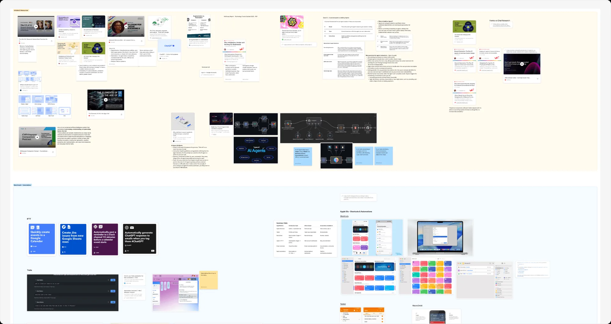
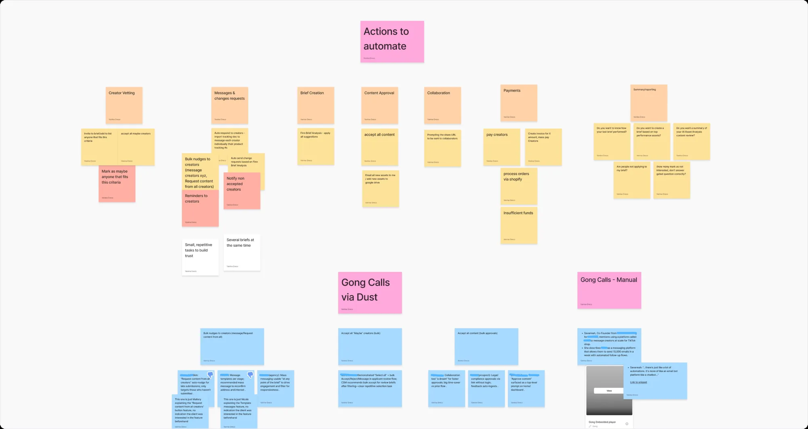
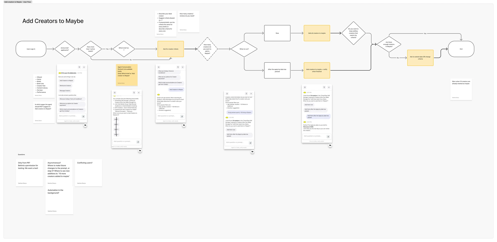
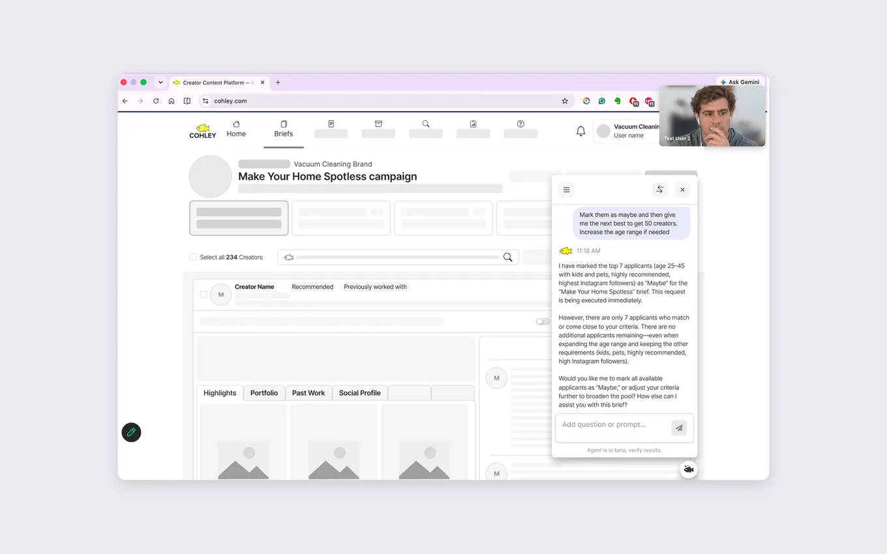
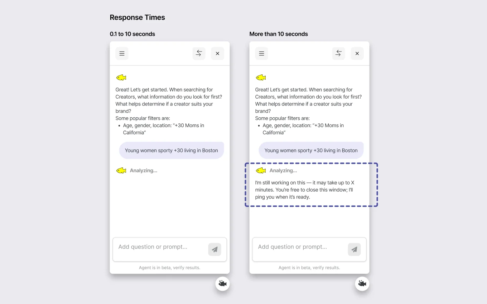

Overview
Cohley is a UGC platform (user-generated content) that helps consumer brands source, manage, and license creator content for marketing campaigns.
Customer representatives spent too much time answering repetitive questions and handling routine client tasks.
Problem statement
How may we leverage an AI solution to reduce sales workload?
The solution was to launch an AI agent that could answer client questions and execute simple actions on their behalf.
Outcomes
We launched the AI agent to a selected group of users as a beta.
The test validated users' ability to complete workflows with the agent while uncovering key usability and trust issues.
- 100% task completion across the moderated sessions.
- 5-6/6 of the users rated the two tasks from "Easy" to "Very Easy" to complete in the survey.
- The top usability issue (unclear processing status) was reported by ~5 users and led to new progress and system-feedback designs.
- Clients later reported a 65% time gain in the brief workflow over 90 days using the agent beta features.
- 55% of agent requests are actions, versus 45% support questions (as reported by Cohley), showing adoption beyond a traditional support chatbot.
Design process
We followed a classic 5-step process:
- Discover. Which tasks should we automate?
- Desk research on key AI trends and best practices
- Client feedback analysis on frequent and tedious tasks to automate
- Define. Which tasks could the agent handle at this point?
- Internal team feedback sessions on tasks to automate
- Feature scoping and refinement
- Design
- User flows
- Hi-fi mockups and prototypes
- Validate with real users
- User testing
- Survey
- Continuous iteration
I will now dive into each of these activities in detail.
1. Discover
Desk research
I conducted extensive research on relevant subjects such as AI trust, AI UX patterns, when to use automation, and how agents should fit within an existing product.

Client feedback analysis
I analyzed recurring client needs from Gong calls using Dust AI to identify frequent tasks we could automate.
2. Define
Internal team feedback
We gathered input from the CSM team on the frequent tasks.
Define the feature's scope and goal
With the data from the previous steps, we chose which actions the agent could safely perform on the user's behalf.
We prioritized frequent, lower-risk actions:
- Answer popular FAQs about the platform in a conversation
- Add creators to a "Maybe" list
- Mass-message creators
- Reimburse creators

3. Design
User flows
I revised and refined the user flows with the internal team (CEO, product director, and tech leads) to align on agent behavior, edge cases, feature goals, expected AI behavior, and technical constraints.

Mockups and AI prototypes
I turned all key tasks into high-fidelity designs and interactive prototypes with Figma Make and Claude Design for further internal validation and refinement.
4. Validate: user testing
The users invited to the beta could choose between a moderated session and a self-paced test, with a $50 Amazon gift card as an incentive.
- 4 moderated usability sessions
- 6 survey respondents
The tasks included Add Creators to Maybe (a list company clients use for creator vetting) and Mass Message Creators (standard reply sent to all creators, such as an approaching deadline to submit videos).
The research focused on four questions:
- Can users complete the task?
- Do they trust the agent?
- Does it save time?
- Do the agent's results match their expectations?

Testing results and key findings
Users successfully completed the tested workflows, but the sessions revealed several important usability gaps.
1. Users didn't know if the agent was working
~5 users were unsure when the agent would finish processing a request.
There was not enough feedback to distinguish between working, finished, and waiting states.
Design response: I added clearer processing feedback and an "Analyzing" state to communicate progress.

2. Users wanted immediate access to the agent's results
~4 users wanted to review creators immediately after the agent added them to the Maybe list.
The AI could complete the task, but the UI didn't surface the outcome quickly enough for users to verify or adjust it.
Design response: We evaluated automatically surfacing Maybe'd creators so users could review and unmark them.
3. AI wasn't always faster
Users saw strong value in the agent for complex, cross-brief, or multi-step tasks, but less value for simple actions already available through the UI.
For basic cases, typing a prompt could take longer than clicking an existing button.
This became an important principle for the product:
Use AI where it removes complexity, not where it replaces a simple click.
4. The agent wasn't discoverable enough
First-time users sometimes didn't know the agent existed or where to find it.
The "sparkle" notification was also easy to miss.
Design response: I improved agent discoverability and notification visibility.
5. Continuous iteration
The agent continued evolving after the beta through:
- Prompt engineering supervised by the tech lead
- AI bug tracking, including daily Slack messages from Claude with main issues
- Usage analytics (clicks, open rate, usage time, video clips and more) with Pendo
- Internal feedback from the whole team
- Feedback from external power users
The beta didn't just validate whether users could use an AI agent. It helped define where AI actually adds value inside Cohley's product, and where traditional UX is still better.
Thanks for reading!